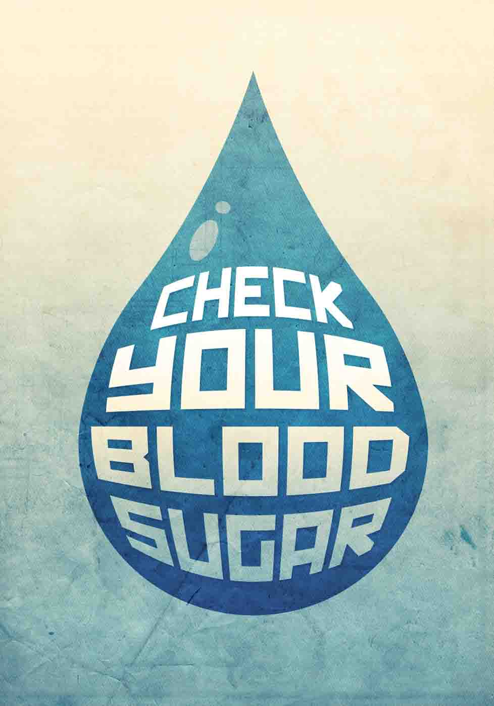

If you are diabetic, keeping track of your blood glucose (blood “sugar”) level is an essential part of your care plan. Talk with your doctor about your target levels and what to do if your glucose level is too high or too low. A diabetes educator can explain the tools, techniques, recording methods, and how to interpret your numbers.
Blood glucose levels can be affected by food, medicine, and activity. In addition to following your regular tracking schedule, check your blood if you experience any of these symptoms of low blood sugar:
Keep a record of your blood glucose numbers, the time of day, and any other relevant information to share with your care team.
